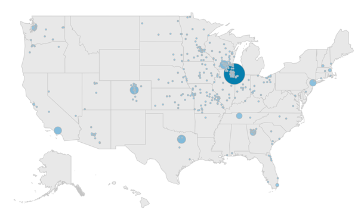
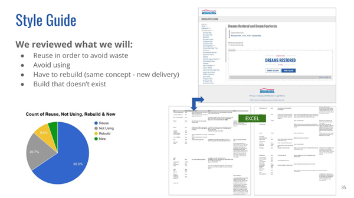
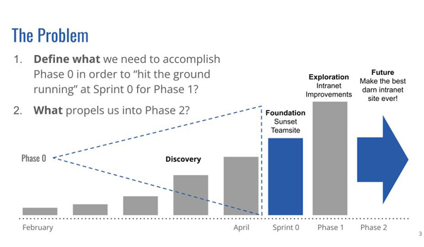
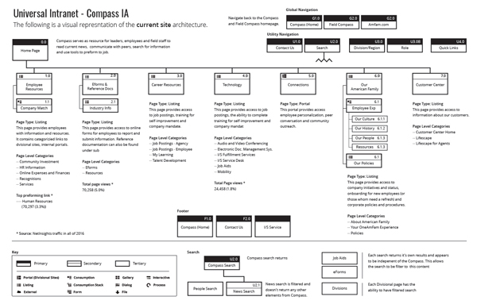
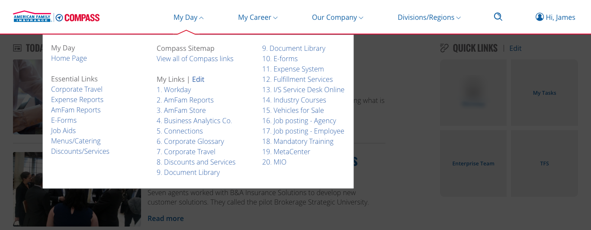
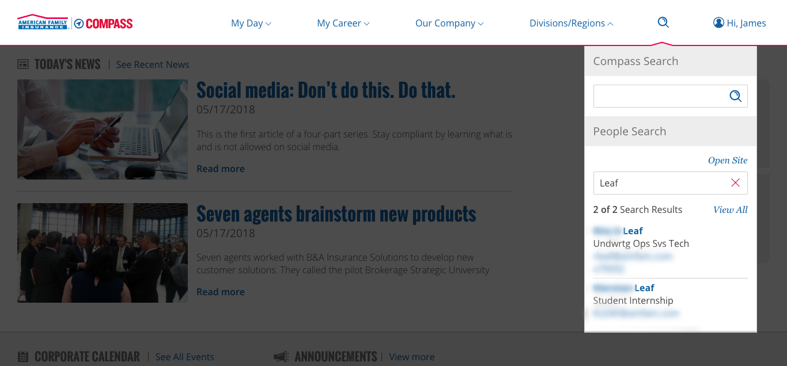

From 2015 to 2018, I was a Senior User Experience Designer at American Family Insurance (Based in Madison, Wisconsin, American Family Insurance offers auto, homeowners, life, health, business and farm/ranch coverage ). I was charged with guiding team members to analyze various sources of information, apply user-centered design principles, and design industry leading experiences for our company and customers. I demonstrated a passion for our brand, displayed a strong design point of view and strived for continuous improvement on behalf of our customer.
With 83% (Update: after the pandemic this number hit 100% at one point) of enterprise residing outside of headquarters physical location, the communications team was challenged with producing an informative, consistent, and transparent messaging platform that enganged it's users in a meaningful way. In addition, there were a mulitude of competing platforms that diverted the attention of readers. This diversion of attention caused confusion, made tasks harder to accomplish, and increased enterprise expenses. Solving these communication problems was critical for enterprise as all of this factors impacted our customers.
To give everyone a stronger sense of belonging to one company, we needed a platform that could be the central source for news, announcements and events. Additionally, to keep everyone connected, we needed to build a strategy to ensure our audience used Compass as a tool to find their web-based tools and share relevant content within their internal and external (if applicable) networks.
Balancing desirability, feasibility, and viability through research. In order to accomplish our goal we would need to better understand our current users, the capabilities of our developers, and the needs of the communications team.
To begin, we conducted listening sessions to help create user groups based on audience motivations, feelings, pain-points and goals. Through research, we discovered:
Based on the findings, we established a strategic foundation to create features that would accommodate each user’s needs to help them perform their responsibilities. We found:
We also exposed behavioral intent throughout our interviews that could be used to reach our audience at different times in different ways.
We also learned:
We also need to meet the needs of our business stakeholders timelines by leveraging our existing brand style guides and component/pattern libraries. By doing so, we estimated that 65% of the existing UI elements and components from other digital efforts could be reused. This gave the developers a solid starting point and base knowledge of how the front-end could be built on a new platform. Recycling this work also allowed us to explore designs that delivered proven engagement while being mindful of budget.
Our communications team was looking to accomplish a lot with this project, but still had constraints with time and budget. We needed to move the majority of non-standard communications sites to the new platform (Sitecore). This meant demonstrating the value of this effort to business stakeholders and that the approach was a viable solution for their needs.
We held frequent sessions with leaders, subject matter experts, and development to mark our direction, pivots, and progress.
We conducted the following studies, empower developers, and convince business stakeholders that we were heading in the right direction.
Divergently thinking about the different possiblities of our future communications needs of our people.
The previous intranet (Compass) homepage for employees had inconsistent functionality that negatively impacted productivity. Moreover, the navigation was not intuitive, search results were unreliable and no consistent information architecture or standard were used. The intranet (Field Compass) homepage for agents didn't match the user’s mental models of modern digital experiences.
So we introduced a personalized global navigation system that was action-oriented, allowing the employee audience complete their jobs efficiently. Decisions for rebuilding the global navigation were based on frequency of use, metrics and best practices. The personalized global navigation targets by role, location or individual preferences.
So we explored new opportunities for users to consume information. For instance, during the listening sessions we learned most users valued announcement headlines. We placed this content in expanding blocks for quick access. Additionally, we learned that users felt behind when returning from vacation. Upon return, most would rely on email and other channels to catch up. Because of this concern, we created a single area, which allows users to consume the last 30 days of content.
Previously, site controls were inconsistently placed in throughout the intranet. The new utility menu captures these site controls allowing users standardized access throughout Compass.
Confirming personalization desires while validating business concerns
We choose to build a tool to better understand the models users had around their content organization needs. This method of testing is similar to typical usability studies in that participants are asked to complete tasks using think-aloud protocol. This version, however, allowed participants to create their very own designs based on what we were discussing at the time. We could add constaints or make it free-form based on our questions.
So instead of waiting until the end of the design, we could quickly gather feedback. With this feedback, we could quickly validate our designs assumptions or get feedback on new solutions.
In addition to helping users consume content, we explored ways for users to customize their digital space. For instance, a majority of users bookmarked important links within their browser. Therefore, we created a place for users to access their links on any device or browser and display their favorite links on the home page.
Updated homepage - The home page consolidated functionality for all audiences based on company and role to deliver a consitent personalized content. The first section, My Day, was designed to help users locate what they need in order to do their job. It featured today’s news, four quick links, a calendar, and announcements. The second section, My Feed, helped users keep up-to-date with news.
Article improvements - We strengthened our article content by moving to shorter, easy-to-scan responsive layouts; while improving our visual storytelling through infographics, photos and video. We placed an emphasis on social and user-generated content, to further connect and share with an external audience.
Consolidated corporate messaging – We consolidated multiple communication tools into one. Allowing content authors, a place to efficiently deliver targeted information to users. Another notable improvement is these announcements are indexed for improved searchability.
Persistent favorites - Users can select from a personalized list of links or create their own. The top four links are then listed on their home page thus customizing the platform to be relevant to their jobs and interests.
Personalized RSS Feed - From one location, My Feed lets users see previously released news articles, announcements and social posts (Twitter and Connections). It’s the place to catch up if individuals have been away from of the office.
Improved content search - Users will benefit from divisional content placed within the platform, since it integrates with the new search strategy.
Alerts and notifications - Users can easily find alerts and other notifications in the platform with banners and counters visible on various features.
Compass portability - The platform was designed with mobile-first in mind to accommodate multiple form factors.
Finally, we built and tested the new features. As a result, the platform created tangible impacts on engagement and productivity. Today we continue to learn and refine the platform.